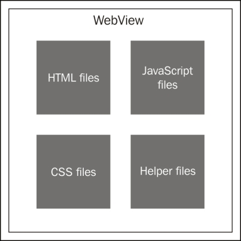
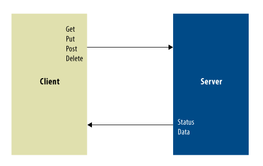

Silesian Java User Group - 15.04.2016
Ionic - case study
Created by Tomasz Waszczyk / @Boomattache
Agenda
- Introduction
- Challenge
- Ionic 1
- Ionic 2
- Frontend
- Backend
- Q&A
Introduction
- About me
- Who am I ?
- Feel free to ask during presentation.
My story with Hybrid Applications
...has begun around 1.5 year ago.
Ionic 1
...2015 year was very fruitfull
Ionic 2
...2016 year is also very fruitfull
What is hybrid application ?
...it is almost like rocket science..
Pros
- Cross Platform
- Native Calls
- Offline Mode
- Larger user support
- App store distribution
- Updates - iOS 9
- Push Notifications
Cons
- Hard development
- Some native features may be absent
- High performance can be difficult to achieve
RWD vs Hybrid Application
- no offline mode
- no native API
- distribution might be more difficult
Small explanation
PhoneGap and Cordova

Architecture

WebView
- Android 4.4
- iOS
Code sources
Technology Stack - UI
- Ionic 1
- Cordova
- LESS
- Gulp
Technology Stack - Backend
- WildFly
- JDK 1.8
- Spring
- Hibernate
- Lombok - comments ? ?
- PostgreSQL
- Maven
Lombok
@Getter
@Setter
@NoArgsConstructor
@AllArgsConstructor
@Builder
public class AlarmsSearchCriteria {
private Pageable pageable;
private AlarmsSearchCriteriaOrderBy alarmsSearchCriteriaOrderBy;
private OrderByDirection orderByDirection;
}
Gulp
gulp.task('run.build', ['build', 'prepare.selenium'], function () {
return gulp.src('build')
.pipe(webserver({
host: '0.0.0.0',
port: 8001,
livereload: true,
//livereload: {
// filter: 'modules/**/*'
//},
//directoryListing: true,
//open: true,
fallback: 'index.html',
proxies: [
{source: '/app', target: API_SERVER + '/app'}
]
}));
});
Communication
WebSocket
@Configuration
@EnableWebSocketMessageBroker
public class WebSocketConfig extends AbstractWebSocketMessageBrokerConfigurer {
@Override
public void configureMessageBroker(MessageBrokerRegistry config) {
config.enableSimpleBroker("/topic");
config.setApplicationDestinationPrefixes("/r");
}
@Override
public void registerStompEndpoints(StompEndpointRegistry registry) {
registry.addEndpoint("/add").withSockJS();
}
}
Configuration
.run(function ($ionicPlatform) {
$ionicPlatform.ready(function () {
// Hide the accessory bar by default
//(remove this to show the accessory bar above the keyboard
// for form inputs)
if (window.cordova && window.cordova.plugins.Keyboard) {
cordova.plugins.Keyboard.hideKeyboardAccessoryBar(true);
}
if (window.StatusBar) {
// org.apache.cordova.statusbar required
StatusBar.styleDefault();
}
});
})
Futher configuration
.config(function ($stateProvider, $urlRouterProvider) {
$stateProvider
.state('mmdc', {
url : "/app",
abstract : true,
templateUrl: "core.menu.html",
controller : 'MainCtrl'
})
Summary
“ ...sory guys but I do not feel yours application....”
“..is cool but...”
Possible solutions
- React Native
- jQuery Mobile - do not use it due to performance
- Native Script
Before end of my presentation
THE END
Thank you !
Feedback highly appreciated !
Contact: tomasz monkey waszczyk dot com